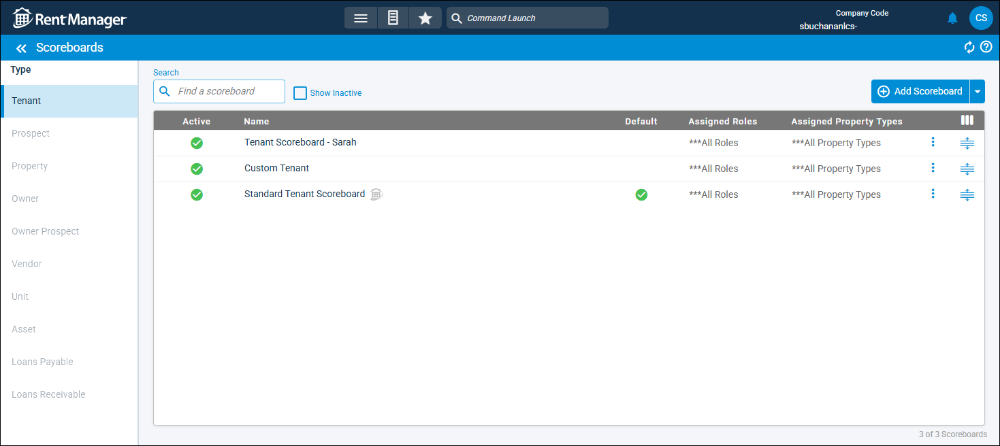

Source: https://rmxhelp.rentmanager.com/Topics/Express/CSH/Scoreboards.htm
Scoreboards (Page)
Scoreboards provide at-a-glace information for entity details pages such as tenants, prospects, etc. The scoreboard is made up of fields and action buttons which populate for the selected entity account. The Scoreboards page displays all scoreboards available in Rent Manager, including the default system templates and any customized scoreboards created and edited in the scoreboard designer. There are various types of custom scoreboards you can create for Rent Manager entities like tenants, properties, and assets.
Scoreboards marked with are system templates that cannot be edited or deleted, but you can create copies of the system templates to modify the copies as needed. You can then select which scoreboard to use as the default for each entity type.
Related Privileges
| Group | Privilege | Column |
|---|---|---|
| Setup | Edit system scoreboard | Enabled |
| Edit own scoreboard | Enabled |
For more information, refer to Control User Access.
To access the Scoreboards page, go to  arrow_forward
arrow_forward  Administration, then go to .
Administration, then go to .

On the left in the Type section, you can select the entity type for which to customize scoreboards, such as Tenant scoreboards.
Filter Options
The following filter options are available on this page.
| Filter | Option |
|---|---|
|
Search |
Enter the desired search criteria to display scoreboards with information that matches the search criteria. |
|
Show Inactive |
If checked, the list includes any scoreboards that have the Active option unchecked. |
Column Descriptions
The following columns display on this page. By default, some columns display only if added via  .
.
| Default Column | Description |
|---|---|
|
Active |
A |
|
Assigned Property Types |
Lists the property types (e.g., Single Family, Commercial, Manufactured Housing)) assigned to this scoreboard. |
|
Assigned Roles |
Lists the user roles (e.g., Administrator, Leasing Agent, Maintenance) assigned to this scoreboard. |
|
Default |
A |
|
Name |
The unique label to identify the scoreboard's use case. Scoreboards with after the name are system scoreboards and cannot be edited or deleted. |
|
Available Column |
Description |
|
Create Date |
The date that this scoreboard was created and first saved, in a mm/dd/yy format. |
|
Create User |
The Username of the user who created and first saved this scoreboard. |
|
Update Date |
The date that this scoreboard was last updated and saved, in a mm/dd/yy format. |
|
Update User |
The Username of the user who last updated and saved this scoreboard. |
Row Actions
The following actions are available by clicking  next to each custom scoreboard.
next to each custom scoreboard.
| Option | Description |
|---|---|
|
Assign Property Types |
Allows you to assign the scoreboard to specific property types. For example, if you assign a tenant-type scoreboard to Apartment, then this scoreboard displays for any tenant at an apartment-type property. |
|
Assign Roles |
Allows you to assign the scoreboard to specific user roles. For example, if you assign a tenant-type scoreboard to Office Manager, then this scoreboard displays on tenants only for users assigned to the Office Manager user role. |
|
Copy |
Creates a duplicate of the scoreboard. If you want to make edits to the system scoreboard, you must create a copy and edit the copy. |
|
Delete |
Permanently deletes the scoreboard from Rent Manager. This action cannot be undone and is not available for system scoreboards. |
|
Edit |
Opens the scoreboard designer so you customize the scoreboard as needed. This option is not available for system scoreboards. |
|
Make Default |
Set as the default scoreboard to use when no other scoreboards are assigned. This option does not display for scoreboards already marked as Default. |